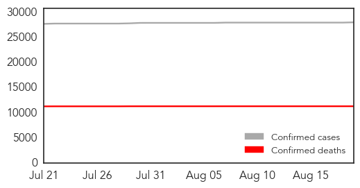

30 Day Trends
Web: 1 alerts, 0 warnings
Twitter: 0 alerts, 0 warnings
23 new deaths (11284 total)
310 new cases (27952 total)
Top Articles:
- 1.000
- UN: Ebola outbreak a public health emergency
- 1.000
- Explaining Emerging Infectious Diseases
- 0.999
- South Jersey malaria case triggers Ebola precautions
- 0.999
- Americans Who Contracted Ebola In Liberia Recover
- 0.999
- Politico SL News Traditional practices nurture the Ebola virus
- 0.998
- Politico SL News NERC warns against stigmatization of EVD survivors
- 0.997
- No Ebola exposure for Stratford patient
- 0.993
- Quick, Paper-Based Ebola Test May Help in Remote Areas
- 0.993
- Ebola’s victims of the future: pregnant women
- 0.991
- Ebola Ruled Out for New Yorker Who Returned From...
- 0.991
- Ebola Ruled Out for New Yorker Who Returned From...
- 0.990
- WHO will lead and who will pay? The World Health Organization, Ebola and the future of global health
- 0.987
- Sierra Leone awaits countdown to Ebola-free declaration
- 0.987
- Pres. Obama Commits To Containing Ebola In West Africa
- 0.982
- Liberia Goes 35 Days In Ebola Free Count-down
- 0.981
- Sierra Leone awaits countdown to Ebola-free declaration
- 0.979
- Gloucester Township Woman Diagnosed With Malaria Following West African Trip
- 0.974
- Rapid paper-strip test for Ebola in sight
- 0.973
- Sierra Leone awaits countdown to Ebola-free declaration
- 0.965
- Engaging communities on Ebola is about being able to re-mix the message - Sierra Leone
- 0.961
- Woman tested for malaria at Camden County hospital
- 0.959
- Politico SL News Ebola volunteer workers integration project unveiled
- 0.942
- Sierra Leone awaits countdown to Ebola-free declaration
- 0.928
- Politico SL News Sierra Leone Ebola-free by October
- 0.927
- Ghana halts Ebola vaccine trial due to community protests
- 0.860
- Celebrating everyday humanitarians: #ThanksHealthHero
- 0.858
- African music show to benefit healthcare workers fighting Ebola virus in west Africa
- 0.825
- Accessing water in Liberia - Liberia
- 0.816
- Meet an Aid Worker Behind the Ebola Response in Liberia
- 0.784
- Humanitarian Workers Killed in Line of Duty Honored
- 0.763
- N.J. traveler negative for Ebola after return from Africa and a fever, officials say
- 0.739
- Suspected Ebola patient rushed to New York hospital after visit to West Africa
- 0.670
- Police, EMTs Respond to 'Communicable Disease' Incident in Gloucester Township
- 0.667
- Protect medics in war zones: WHO
- 0.656
- Politico SL News Sierra Leoneans face poor, yet expensive medical services
- 0.652
- “Inspiring the World’s Humanity”
- 0.559
- Messy JFK Memorial Hospital & The Kennedy Legacy
- 0.531
- Syrian Boat People: A global crisis needs global solutions
Top Tweets:
- 0.923
- RT: What's Working: A Sierra Leone hospital's resilience saves lives from Ebola WorldHumanitarianDay ShareHumanity http://t.…
- 0.819
- Sierra Leone awaits countdown to Ebola-free declaration - Yahoo News http://t.co/WCXpocQpA5 ebola EVD
- 0.795
- Doctors rule out Ebola for patient who recently visited West Africa - New York Post http://t.co/nCqCvYBHuo ebola EVD
- 0.790
- Hospital: No Ebola exposure for Stratford patient - Cherry Hill Courier Post http://t.co/m3UUIlnFGo ebola EVD
- 0.773
- 'No public health risk' after local Ebola scare - Cherry Hill Courier Post http://t.co/tkVLh9SGze ebola EVD
- 0.755
- Sierra Leone Nears Ebola-free Declaration - Voice of America http://t.co/Qu5VcAAeM7 ebola EVD
- 0.741
- In West Africa of the 875 health workers infected with Ebola 509 died http://t.co/YGM9YazVzm ThankHealthHero
- 0.741
- In 2015 hundreds of health workers have died in conflict zones and when fighting disease outbreaks such as Ebola ThanksHealthHero
- 0.716
- Meet an Aid Worker Behind the Ebola Response in Liberia - Huffington Post http://t.co/tU5G3rrr8H ebola EVD
- 0.716
- Meet an Aid Worker Behind the Ebola Response in Liberia - Huffington Post http://t.co/DVP0mbj80C ebola EVD
- 0.668
- Patient with possible Ebola taken to NYC hospital - New York Post http://t.co/sAWK9iUiml ebola EVD
- 0.628
- World Humanitarian Day Honors Ebola Syria And Nepal Health Workers - Huffington Post http://t.co/zA4aABEnhZ ebola EVD
- 0.545
- For Immediate Result: Paper-Based Test Helps Diagnose Ebola In Remote Areas - Science Times http://t.co/BUxYWrgZDj ebola EVD
Web/News Articles

Tweets

Human Impact
Article Locations

Article Confidences